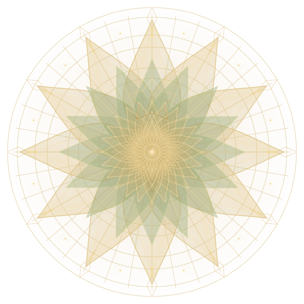

MUSIC • MEMORY • EMOTION
Every song has a story.
Let the violin tell yours.
A little Bengali nostalgia, a touch of Bollywood magic, and melodies from around the world — played one heartfelt note at a time.
𝄞Violin PrinceIndependent violin covers by Prince Baidya

01 / SOUND & SOULEST. IN MELODY
For the songs that stay with us.
✳For the feelings words can't quite explain.
✳For the love of music.
 FEATURED PERFORMANCE
FEATURED PERFORMANCE
ONE FOR THE FEELINGS
Some songs just stay with you.
Say You Won't Let Go — a quiet, expressive violin cover for a familiar melody and a little moment to yourself.
FOLLOW A FEELING
Okay, what are we feeling today?
Pick a mood and find a violin cover to start with. Each path leads to real performances—then you can keep exploring.
01 / AFTER HOURS
Late-night feels
Soft melodies for the hours that feel a little quieter.
Find your next listen ↗ 02 / OLD MEMORIESNostalgia Mode
Familiar melodies and memories that never quite leave.
Bring back a memory ↗ 03 / BENGALI SOULBengali Soul
Bengali favourites and poetic melodies, carried by strings.
Explore the melodies ↗ 04 / YOUR SOUNDTRACKMain Character Energy
Big feelings, memorable melodies, cinematic violin moments.
Play the soundtrack ↗You choose the mood. You choose what to play.
THE LISTENING ROOM
Melodies to come back to.
Explore my violin covers, including full performances and Shorts. Filter by musical tradition or choose a melody to watch on YouTube.


RABINDRA SANGEET
Purano Sei Diner Kotha
Rabindra Sangeet in a violin interpretation.
Watch on YouTube ↗


OTHER / SPECIAL
Amar Shonar Bangla
A violin rendition of Bangladesh's national anthem.
Watch on YouTube ↗


OTHER / SPECIAL
Mayer Paayer Jaba Hoye · Shyama Sangeet
A devotional Shyama Sangeet on violin.
Watch on YouTube ↗


OTHER / SPECIAL
Jana Gana Mana · Violin Cover
India's national anthem performed on violin.
Watch on YouTube ↗


OTHER / SPECIAL
Isswor Manushke Valobeshe
A Bengali devotional song in a violin rendition.
Watch on YouTube ↗
RABINDRA SANGEET
Best of Rabindra Sangeet · Medley
A compilation of Rabindra Sangeet melodies.
Watch on YouTube ↗

BENGALI
Bojhena Shey Bojhena · Alternate Cover
Another published violin cover of the song.
Watch on YouTube ↗


BOLLYWOOD / HINDI & INDIE
Choo Lo
The Local Train's beloved melody in a cinematic violin cover.
Watch on YouTube ↗


ENGLISH / POP
Dandelions
A dreamy violin cover of Ruth B.'s song.
Watch on YouTube ↗Explore the cover page ↗
ENGLISH / CAROLS
Hark the Herald Angels Sing
A Christmas carol interpreted on violin.
Watch on YouTube ↗Explore the cover page ↗
BOLLYWOOD / HINDI & INDIE
Kal Ho Naa Ho
The timeless Hindi film melody in a cinematic violin cover.
Watch on YouTube ↗Explore the cover page ↗
BOLLYWOOD / HINDI & INDIE
Tere Paas Main
A cinematic violin solo inspired by A. R. Rahman's music.
Watch on YouTube ↗Explore the cover page ↗
BOLLYWOOD / HINDI & INDIE
Hai Apna Dil To Awara
A classic Hindi film melody, reimagined on violin.
Watch on YouTube ↗Explore the cover page ↗ENGLISH / POP
Say You Won't Let Go
A gentle violin cover of James Arthur's song.
Watch on YouTube ↗Explore the cover page ↗
SPECIAL · NATIONAL ANTHEM
Jana Gana Mana · Guitar & Violin
A collaborative violin and guitar performance of India's national anthem.
Watch on YouTube ↗No covers in this category yet. Try another filter.

A NOTE FROM THE ARTIST
Hello, I'm Prince.
I'm the violinist behind Violin Prince, sharing instrumental interpretations of the songs that move me — from Bengali favourites and Rabindra Sangeet to Bollywood and English melodies.
This little corner of the internet is for listeners who believe music can bring a memory back, make an ordinary moment feel special, or say what words can't.
Come listen on YouTube ↗♬
YOUR SONG, NEXT?
What should I play next?
Have a melody you'd love to hear on violin? Tell me about it. Your suggestion might inspire a future cover.
✳
Just the music, no fuss.
No phone number, wedding details, or account needed.
LET'S KEEP THE MUSIC GOING
Meet me where the melodies live.
Listen to new covers, find Shorts, and be part of the next song choice.
ONE LAST LITTLE QUESTION
Will you support Violin Prince?
Every listen, share, and subscription helps these melodies find their way to someone new.
Choose whichever feels right. The music is here for everyone.
✦ THE GOLDEN BLOOM ✦
A little flower of thanks, just for you.
Thank you for cheering on independent violin music. May your day be full of beautiful melodies.
Explore Violin Prince on YouTube ↗